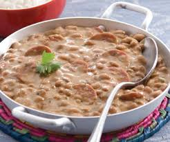

A palavra tutu vem do quimbundo quitutu, da língua africana “banta” mais falada em Angola, e quer dizer “papão”. Segundo historiadores, o prato nasceu no século 16, com a chegada de portugueses atraídos pelo ciclo do ouro e das riquezas em Minas. As cozinheiras tinham que usar pouco sal (devido ao preço) e criar então, comidas saborosas à base de grãos como feijão e milho. Daí começou a se utilizar a farinha de mandioca para engrossar o feijão sem aumentar o custo da produção. Hoje, muito presente nas festas de reinado de Minas, o tutu resgata um pouco da tradição e cultura de nossas terras, sendo síntese de nossa origem gastronômica, com tanta simplicidade!
O feijão era cozinho e incrementado com alho, cebola e bacon. Se fosse mulatinho a mistura era com farinha de milho. Caso o feijão fosse preto, era engrossado com a farinha de mandioca. A comida tinha que ser seca, para não azedar nos lombos das tropas.
As saladas não foram muito incrementadas, em parte pela terra mineral, ruim. Só a couve foi mais usada (junto ao angu e nas feijoadas) e o ora-pro-nobis, plantados nos quintais caseiros, onde também se cultivavam salsinha, cebolinha e os chás de várias espécies.
De maneira geral, porém, a questão alimentícia era gravíssima. Pouca comida para muita gente, agravada pela natural dificuldade de transporte, vindos os alimentos sempre de longe, carregados pelos tropeiros. Os cereais vinham da região de Ouro Branco e as carnes do sertão mineiro, vindas em boiadas desde a Bahia ou até mesmo do Rio Grande do Sul. Muito comumente, as pessoas tinham ouro. E não o que comer. Hoje , os tempos são outros, e o bom Tutu à mineira é servido com arroz branco, um naco de lombo, torresminho, couve fininha refogada no alho, angu, linguiça e enfeitado com ovos cozidos.
Uma curiosidade interessante sobre o Tutu de Feijão é que, tradicionalmente, ele é preparado com feijão roxo ou preto. O prato é geralmente acompanhado de torresmo, linguiça, couve refogada e ovos, formando uma refeição completa e saborosa. Além disso, o tutu é rico em proteínas e fibras, sendo uma opção nutritiva e sustenta. Outra informação fascinante é que o tutu é um prato tão versátil que, em algumas regiões de Minas Gerais, ele é servido até mesmo no café da manhã.
